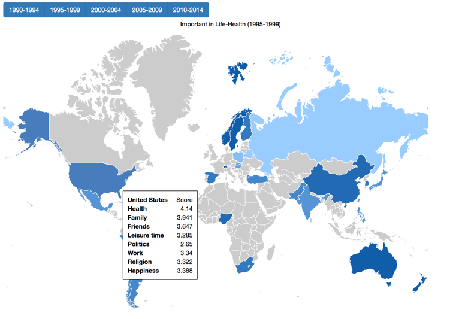
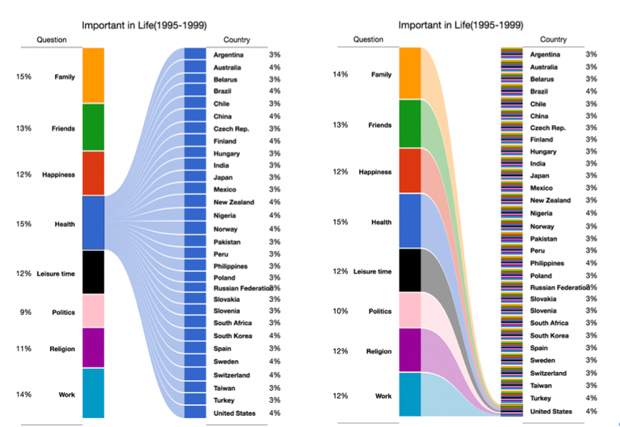

My name is Haoqing Shen.This is my exploration for assignment 2 in information visualization 2019 course.
I selected 8 questions in WVS website and tried to find the relationship between health and other 7 important things in life, family, friends, work, leisure time, religion, politics and happiness. Here are my visualization and discovery processes.
My research question is to find the relationship between the health and the important things of life in different countries.
I first chose 1990-1994 as a time wave and all countries to see the distribution in V83(State of health) and V18(Feeling of happiness).We could see some countries which got "Very Good" in health also got "Very happy" in happiness such as Nigeria. But the map of most mentioned answer and the graph of stack bar in each category are not so clear based on the most mentioned answer and so many legends and we couldn't compare two questions at the same time.
|  |  |
I changed the category into numtric values by normalizing them from 1 to 4 and caculated average score. We could compare the scores of other questions by putting mouse on USA and find it got the highest score in "health" for 1995-1999 as well as happiness. We could also change the map by time.
As for the biPartite graph in 1995-1999, we could figure out that "family" and "health" are the most important parts in life in these 8 aspects for USA as well as all countries. Besides, the higher the "health" score, the greater the proportion in the population. In countries with lower "health" scores, the proportion of "health" is less than that of "family", and vice versa.